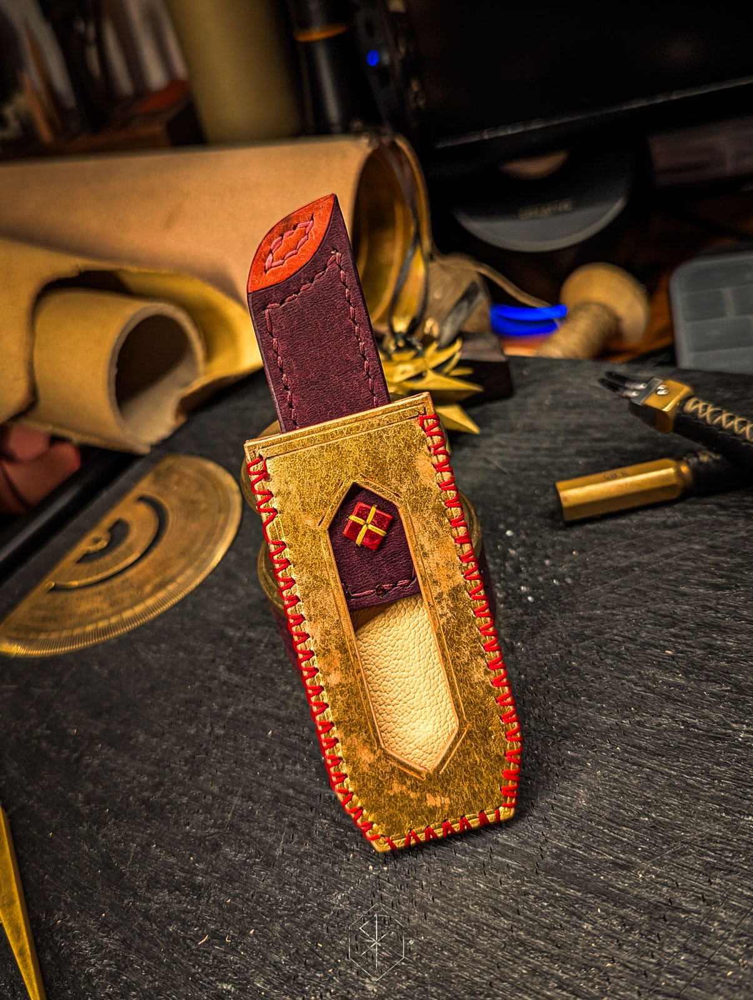
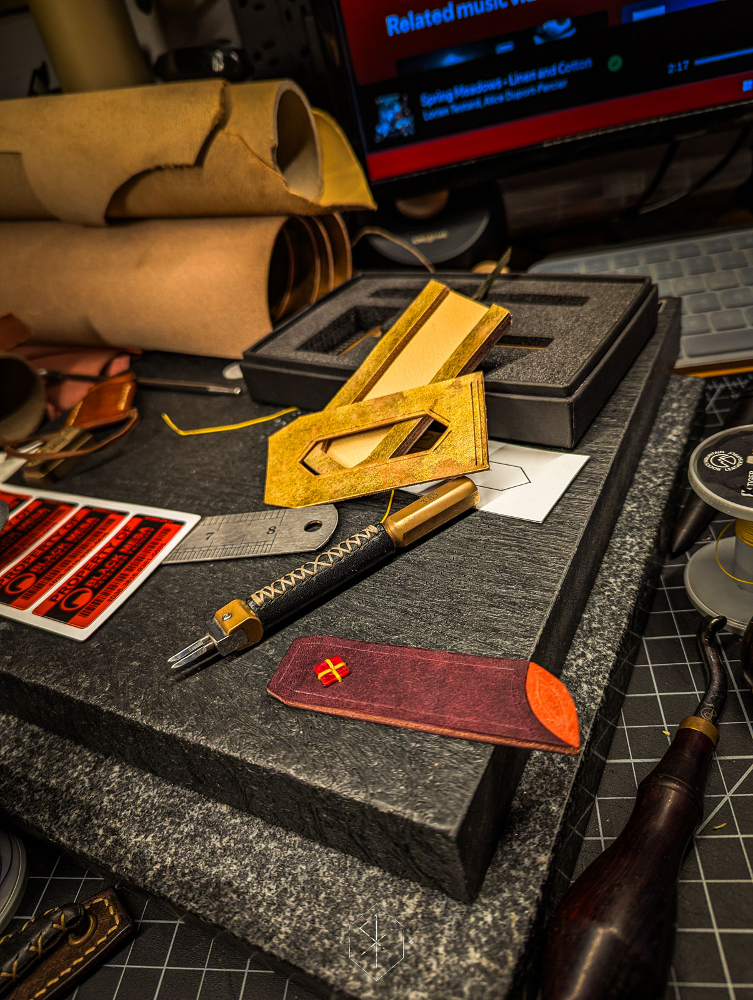

A record of craft, time, and becoming.
This is not just a gallery of finished work. It is the story of learning, failing, refining, and slowly shaping a craft into something true.
Enter the LibraryMore than finished pieces
This archive follows the path from the first uncertain cuts to work made with greater control, patience, and intention. Every year holds its own chapter. Every piece carries something forward.
Featured Work
A few pieces from the ongoing journey.


The archive
The Library is organized by year, not to sort products, but to trace growth. What changed. What sharpened. What started to feel more true.
Browse the Years